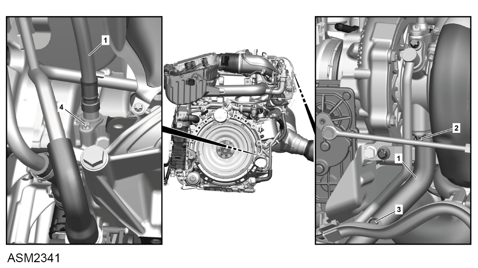

Oil Return Line - 4 Cylinder
Print
Operation Code: 40.21.23-02
Important Information
 WARNING: Engine oil is a toxic substance and can be lethal if ingested. Wear protective gloves, protective clothing and safety glasses.
WARNING: Engine oil is a toxic substance and can be lethal if ingested. Wear protective gloves, protective clothing and safety glasses.
Removal
- Remove engine cover. Refer to procedure.
- Remove rear undertray. Refer to procedure.

- Remove bolt (2) securing oil return line (1) to turbocharger. Torque 8 Nm.
- Remove bolt (3) securing coolant pipe to oil return line. Torque 8 Nm.
- Remove bolt (4) securing oil return line to engine. Torque 8 Nm.
- Remove oil return line.
NOTE: Be prepared to catch any excess fluid.
NOTE: Plug exposed connections to prevent ingress of dirt.
Installation
- Installation is the reverse of removal procedure except for the following:
- Renew discarded O-rings.
- Check oil level and top up if necessary.